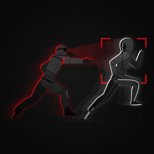

HUNTSCommunity Guidelines
Effective 13 November 2026 · part of the Terms of Use
The short version: play safe, play fair, and treat everyone – players and the people around you – with respect. There is zero tolerance for offensive names, harassment, threats and cheating.
These rules apply to everyone who plays HUNTS, with or without a HUNTS ID, in the game and in the real world while you play.
Stay safe in the real world
- No catch is worth getting hurt. Stop at every road and never run across traffic.
- Stay out of private property, construction sites, rail lines, highways and anywhere you're not allowed to be. Respect no-go zones and curfews.
- Never grab, push, trip or corner anyone. Catches are confirmed on the phone.
- If someone wants to stop playing, let them stop.
Names everyone can see
Your username, player name, photo and shared map names are seen by other players. They must not be:
- offensive, vulgar or sexual;
- hateful or demeaning about anyone's race, ethnicity, nationality, religion, gender, sexual orientation, disability or age;
- violent or threatening, or about drugs or crime;
- pretending to be someone else – another player, a real person, or HUNTS staff.
Offensive words are filtered automatically: a filtered player name shows as “Player”, and a filtered username can't be used. Players can report anything the filter misses.
Respect other players
- No harassment, bullying, threats or intimidation – in the game, on the team radio, or in person.
- No hate speech or discrimination.
- No sexual content, and nothing that sexualises minors – ever.
- Don't pressure anyone into playing, sharing their location or meeting up.
Respect privacy
- Only play with people who agreed to play. Never use HUNTS to find, follow or track someone who isn't in your match.
- Don't share other players' locations, photos or replays without their permission.
Play fair
- Don't fake your location, except in a host's test mode where everyone knows.
- Don't exploit bugs – report them instead.
- One HUNTS ID per person. Don't use extra accounts, swap accounts, or play for someone else to boost points or rankings.
- Don't use bots, scripts or modified apps.
Report and block
- Report: tap a player on a leaderboard or in Friends (or press and hold them) and choose Report. Pick a reason. The player isn't told who reported them.
- Block: tap a player and choose Block. You stop being friends, and you won't see each other in search, recent players or on leaderboards. Unblock any time in Profile › Blocked players.
- For anything else – including something that happened during a match – email macmini@chefceber.com.
- If anyone is in danger, call your local emergency number first.
What happens when someone breaks the rules
We review every report within 24 hours. Depending on what happened, we may:
- change an offensive username or remove offensive content;
- suspend a HUNTS ID or remove it for good;
- for threats of violence, content that sexualises minors, or anything that puts someone at risk: remove the account straight away and, where the law requires or allows it, report it to the authorities.
If you think we made a mistake, email us and we'll take another look.